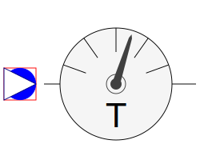
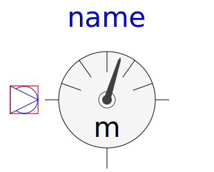
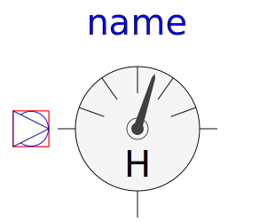

This package contains sensors:
Some of the sensors do not need access to medium properties for measuring, but it is necessary to define the medium in the connector (check of connections). Thermodynamic equations are defined in partial models (package Interfaces.Partials). All sensors are considered massless, they do not change mass flow or enthalpy flow.
| Name | Description |
|---|---|
| Absolute pressure sensor | |
|  TemperatureSensor | Absolute temperature sensor |
| Pressure difference sensor | |
| Temperature difference sensor | |
|  MassFlowSensor | Mass flow sensor |
| VolumeFlowSensor | Volume flow sensor |
|  EnthalpyFlowSensor | Enthalpy flow sensor |